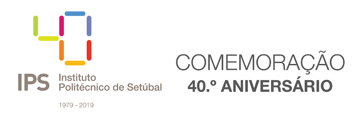

Comemorações do 40º aniversário do IPS | Programa
Politécnico assinala o aniversário com uma série de iniciativas ao longo de 2019
Em 14 de outubro de 1979 foi criado o Instituto Politécnico de Setúbal. 2019 dá início ao programa comemorativo do seu 40.º aniversário, com um conjunto de iniciativas que se prolongarão até outubro de 2019.
Entre as iniciativas previstas, contam-se um congresso, um roteiro por todos os concelhos do distrito de Setúbal, atividades desportivas, a publicação de um livro, um concurso e uma exposição de fotografia, uma semana internacional, e ainda concertos, teatro, ciclos de conferências e ações de desenvolvimento organizacional.
Acompanhe aqui o programa de comemoração deste 40.º aniversário e junte-se a nós nesta celebração.
Ler notícia completa...